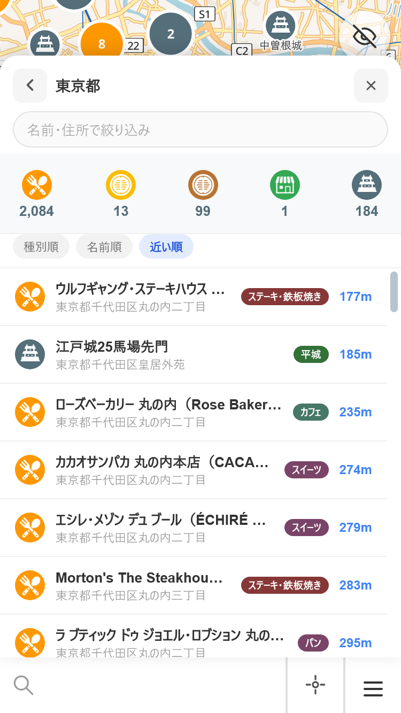
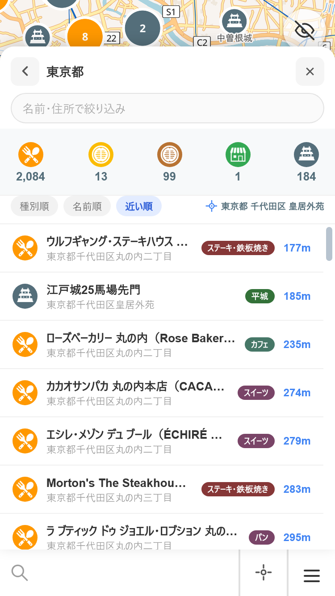
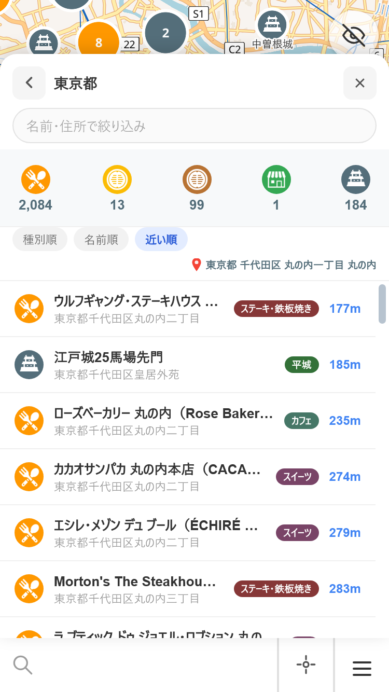
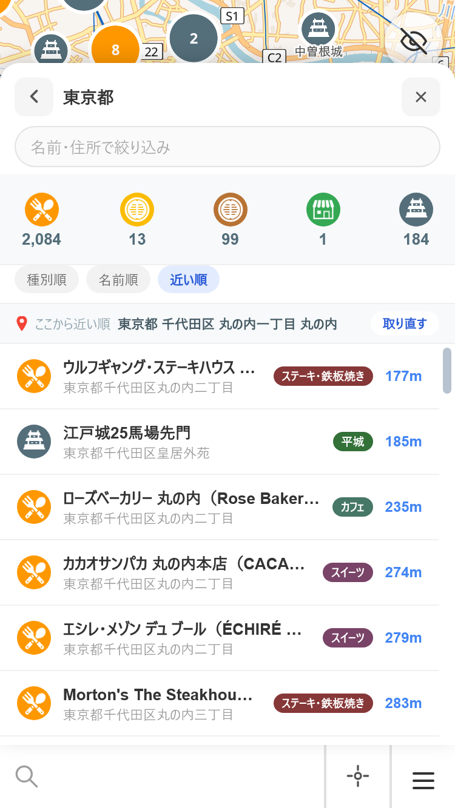
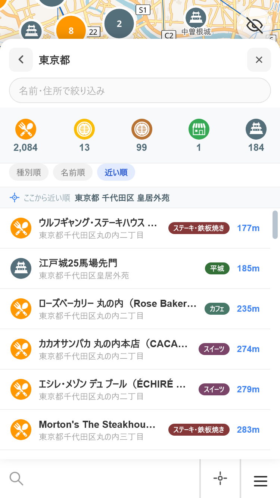
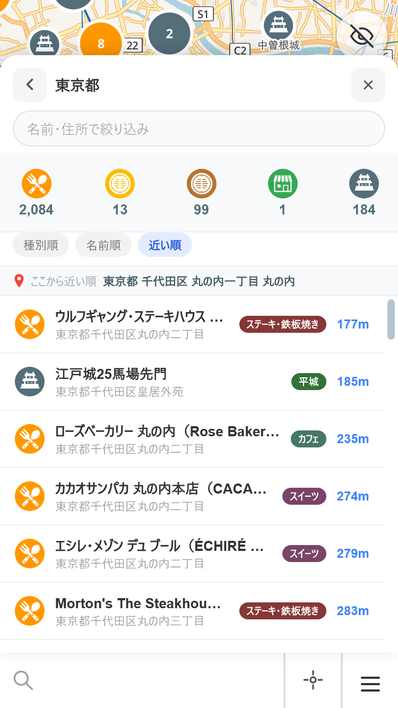
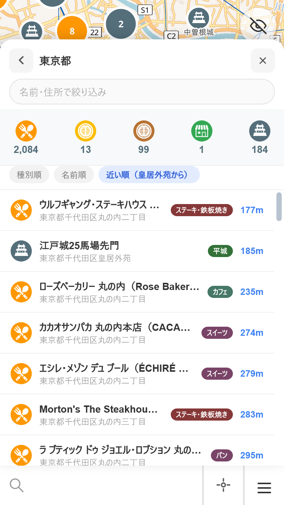
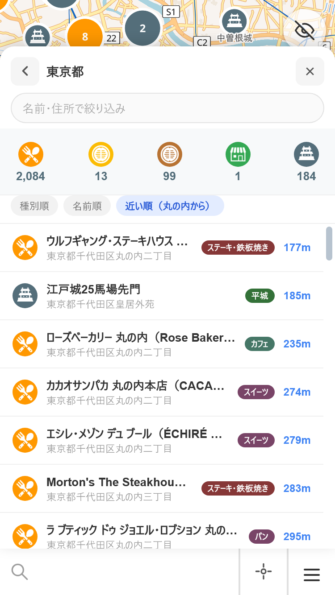
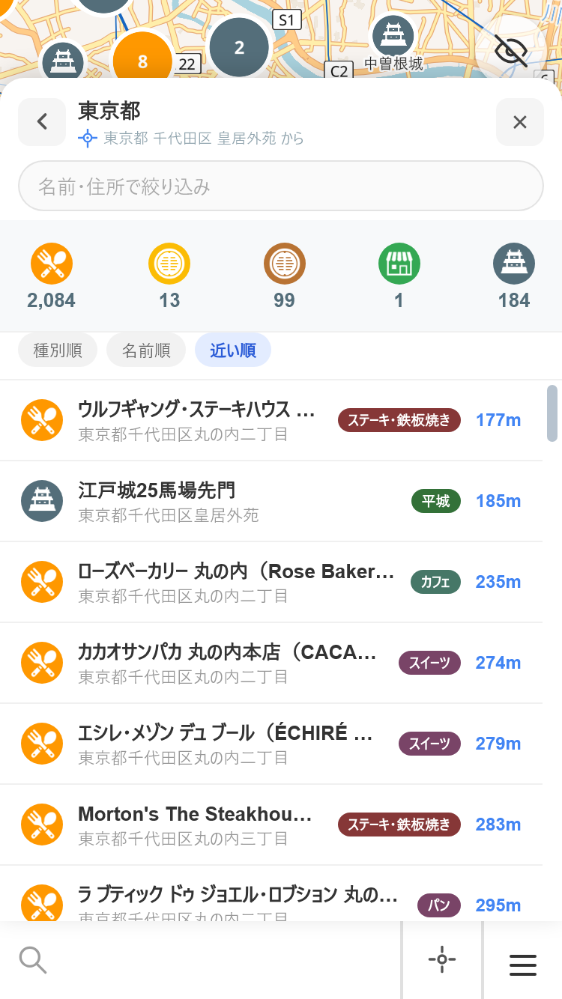
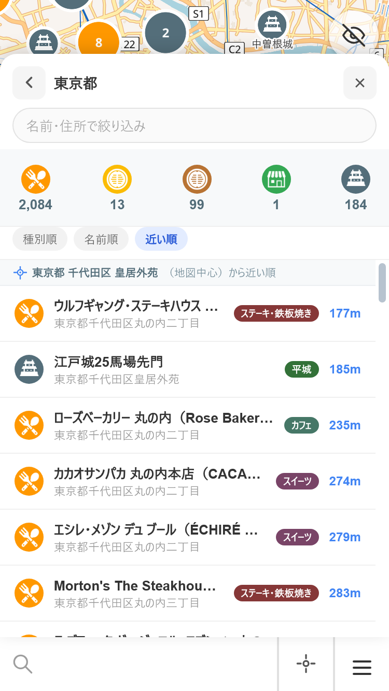

並んでいる画像は、実アプリに案の要素を差し込んで撮った実物のスクリーンショットです（再レイアウトされません）。
CSSを写し取ったのではなく 127.0.0.1/index.html の県ページ（東京都・近い順）そのものに足しているので、
既存の集計帯・ソートチップ・一覧の行との寸法関係はそのままです。
エンジンは WebKit 26.4（iOS Safari と同じ系統）、端末は iPhone SE3（375×667 CSS px / DPR2）、
画像は 750×1334 を 375px 幅で貼っています。
起点の文字列は作り物ではなく、fetchPlaceName()（Nominatim逆ジオコーディング）が実際に返した値です。
典型例が「東京都 千代田区 皇居外苑」（13字＝既定の地図中心 35.68/139.76）、
長い例が「東京都 千代田区 丸の内一丁目 丸の内」（19字＝東京駅）。
残る不確かさは1つだけです。フォントは実機が iOS の sans-serif、この計測は Windows の
sans-serif に解決されるため、字送りがわずかに違い得ます（漢字は全角＝1emで同じ）。実機での確認はしていません。
getSearchCenter()）showOrigin）.lords-filter の枠組み）
そもそもこれを出す価値がある理由（実行して確認済み）。
まず前提として、県ページを開くたびに起点は取り直され、そのときの地図の中心になります
（openPrefDetail の if (!restoreView || !prefState.center)）。
東京駅で開くと起点は東京駅、閉じて立川へ動かして開き直すと起点は立川になることを実行で確かめました。
開いたまま地図を触ることはパネルとオーバーレイに覆われてできません。
それでも起点を出す値打ちがあるのは、起点が地図の中心とは限らないからです。
getSearchCenter() は searchPinLngLat || map.getCenter() なので、
検索ピンが立っている間は、起点は地図の中心ではなくピンの位置になります。
ピンは地図の長押しやオブジェクトからの「周辺検索」で立ち、地図を動かしても残ります。
もうひとつ、一覧 → オブジェクト → 戻る（restoreView）の経路だけは起点を据え置きます。
一覧からオブジェクトを開くと地図がそこへ寄るため、取り直すと戻るたびに並び順が変わってしまうからです
（意図した作り・コミット 88eceb8）。実行すると、地図中心が
139.7674/35.6797 に動いたのに起点は 139.7671/35.6812 のままでした。
この2つの場面では「今の地図の真ん中」と「近い順の起点」がずれます。
以下の案はすべて、起点の2状態をアイコンで描き分けています（青い十字＝地図中心 /
赤いピン＝検索ピン。アプリの ICON_CROSSHAIR_INFO /
ICON_PIN_INFO と同じ絵）。
| 案 | 置き場所 | 一覧が下がる量 | 長い名前(19字)のとき | 近い順以外でも出せるか |
|---|---|---|---|---|
| 現状 | — | 0px | — | — |
| A | ソート行の右端 | 0px | 2行目に回る（+20px・省略なし） | 出せる |
| B | ソート行の下に専用の帯（取り直すボタン付き） | 33px | 省略なし | 出せる |
| B2 | 同上・ボタン無し | 28px | 省略なし | 出せる |
| C | 「近い順」チップの中 | 0px | 末尾だけなので元から短い | 近い順のときだけ |
| D | 県名の下（見出し内） | 3px | 省略なし | 出せる |
| E | 一覧の先頭に貼り付く行 | 0px（一覧の中で25px） | 省略なし | 出せる |
比較の基準。近い順で並んでいるが、177m・185m…がどこからの距離なのか画面に何も出ていない。

ソートのチップは 3つで171pxしか使っておらず、右側に180px空いている。そこへ起点を右寄せで置く。 一覧はまったく下がらない。名前が長いときだけ2行目に回り、そのときも省略はされない。


全幅を使えるので、名前がどれだけ長くても収まり、操作も置ける。
起点はページを開いた時点で固定されるので、地図を動かしたあとに取り直したい場面がある。
帯の形は絞り込み中に出る帯（.pref-rstbar）と同じ作りで、色は集計帯と同じ #f7f9fa。

「取り直す」を置かず、起点を伝えるだけにした版。帯が28pxに縮む。


チップの文字を 近い順（皇居外苑から） にする。高さは一切増えない。
ただしチップに入る長さではないので末尾だけを取ることになり
（「東京都 千代田区 丸の内一丁目 丸の内」→「丸の内」）、どこの丸の内かは分からなくなる。
また、種別順・名前順を選んでいる間はチップが「近い順」に戻るので起点が見えなくなる。


見出しの「東京都」の下に小さく添える。見出しは 52px → 55px にしかならない。 並び順と無関係な場所なので、種別順・名前順のときも同じ場所に出したままにできる （「特に近い順のときだけでなくてよい」に一番素直に合う）。城主詳細でも同じ位置に置ける。

都道府県一覧の地方見出し（.reg-head）と同じ position:sticky の行。
スクロールしても頭に残るので、一覧を下まで送っても起点が見える。
帯を1本増やさずに済む代わりに、一覧の中を25px使う。
